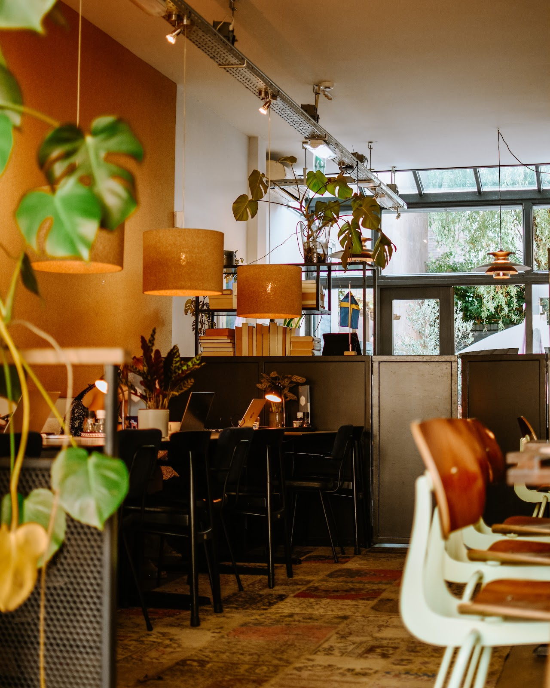
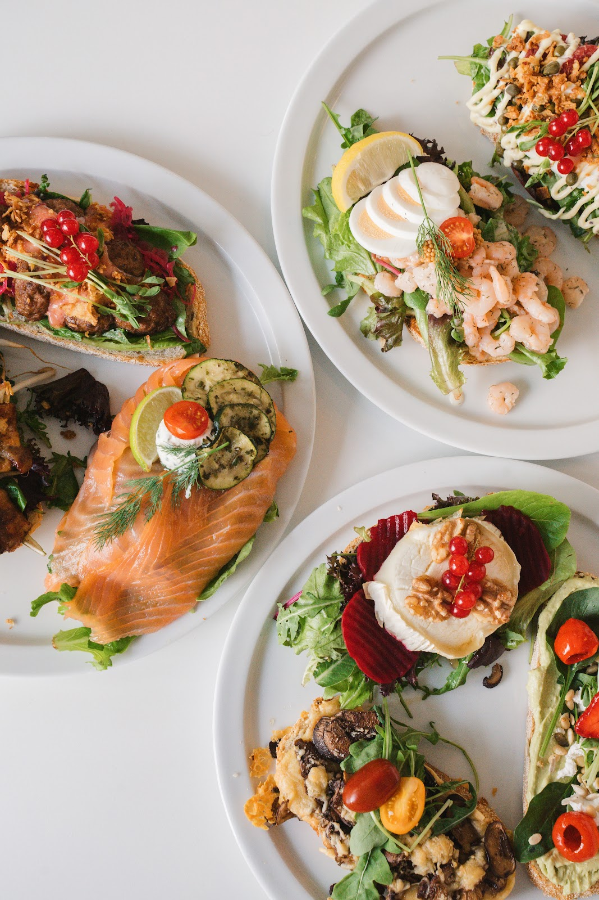
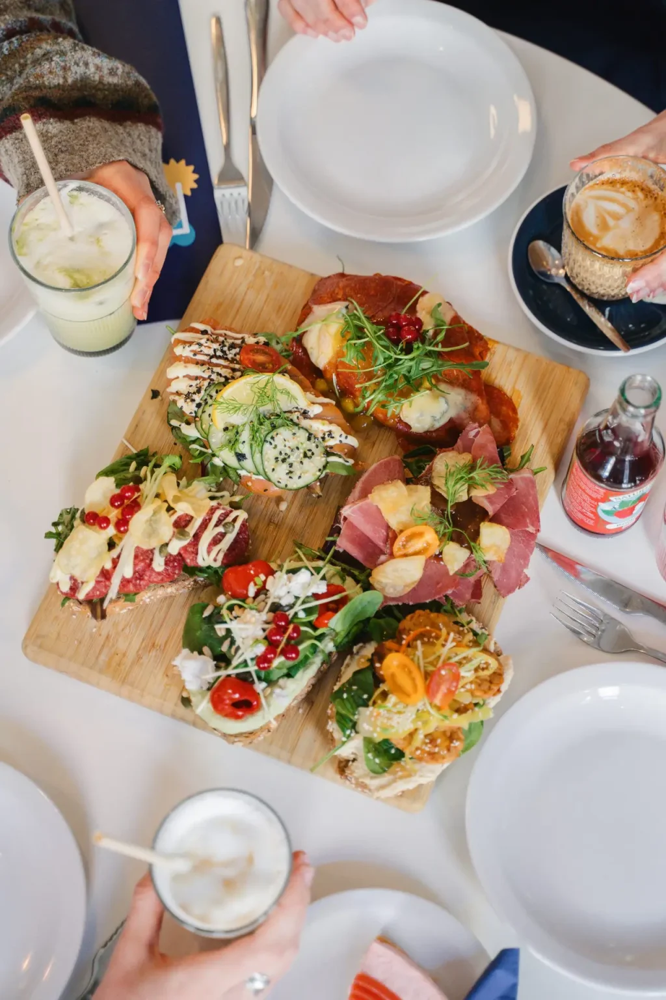
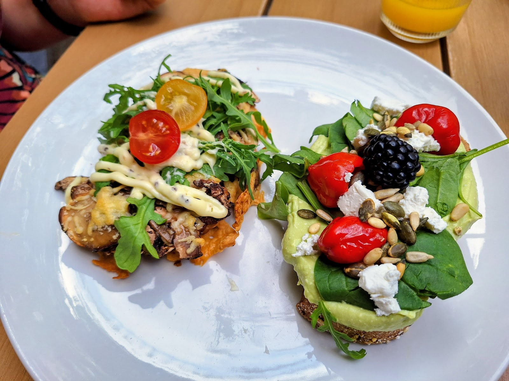
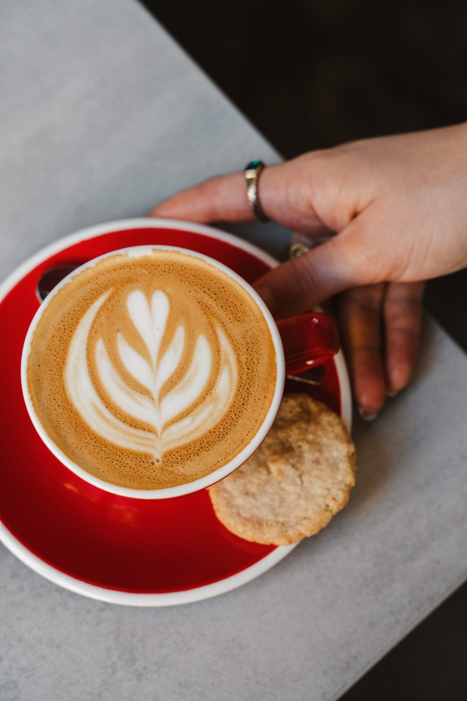
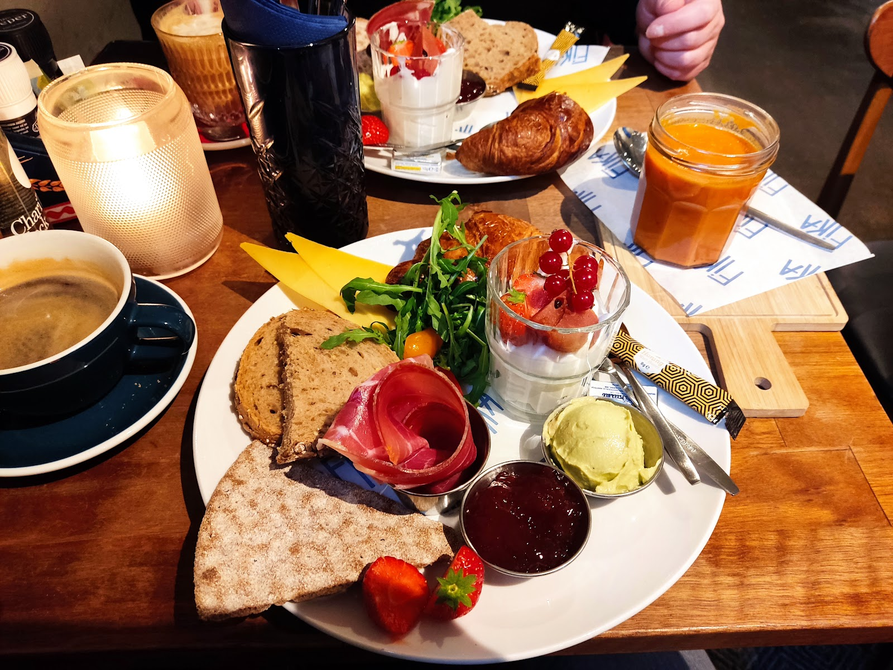
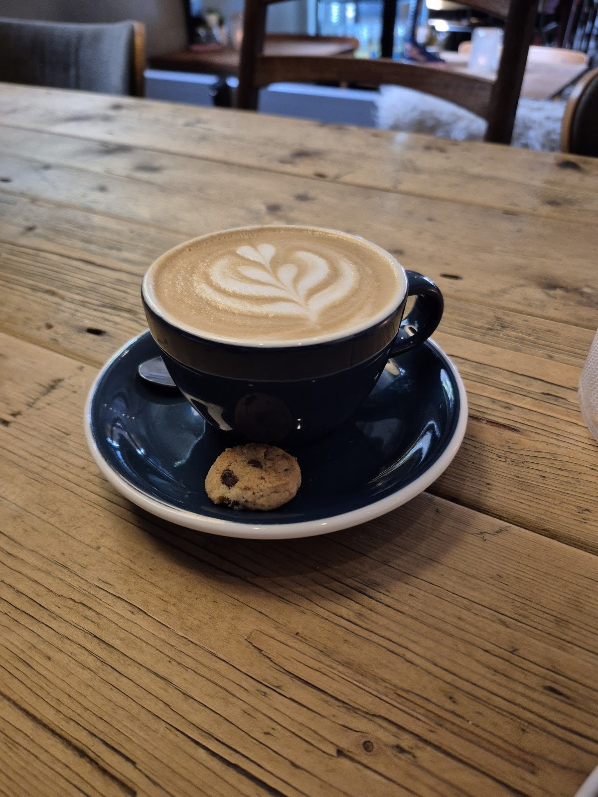
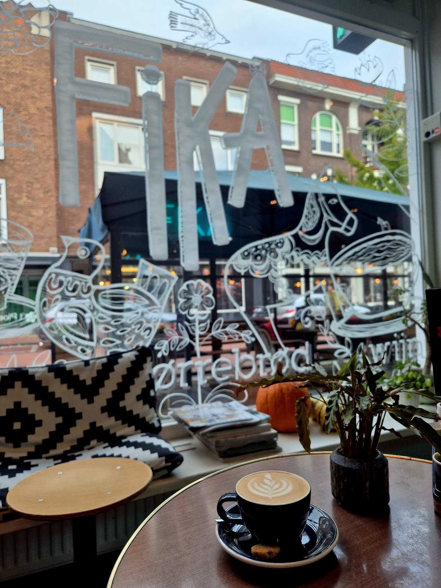

Scandinavische lunchroom in Nijmegen
Koffie, iets lekkers en even niks.
Fika is de Zweedse pauze die je echt neemt. Bij ons met smørrebrød op zuurdesem, goede koffie en taart als toetje. Elke dag open van 9 tot 6.
4,5 uit 693 Google-reviews


Smørrebrød, zoals het hoort.
Een flinke plak zuurdesembrood, en daarop wat de dag lekker maakt. Zweedse balletjes met aardbeien, pikante kip in een goede marinade, of de smokey tempeh waar gasten speciaal voor terugkomen.
Eet u plantaardig? Dan hoeft u bij ons niet te zoeken: er zijn veel vegan opties, zoals smørrebrød met vegan cheddar en kimchi. Ook om mee te nemen.


Fika is een werkwoord.
In Zweden stop je even. Je pakt een koffie, iets zoets erbij, en je neemt de tijd. Met een vriendin, met collega's, of alleen met een boek bij het raam.
Bij ons krijgt u een koekje bij de koffie, en staat er taart voor wie na de lunch nog trek heeft. Ook met de laptop bent u welkom aan de lange tafels.



Wat gasten zeggen.
4,5 uit 693 reviews op Google
“Een dikke vijf sterren! Veel vegan opties waaronder smokey tempeh die we zelfs nog eens besteld hebben zo lekker was deze. Personeel is lief en komt regelmatig langs. En eindelijk gewoon gezondere opties voor lunch. Heel blij hier mee. Het smörrebröd met vegan cheddar en kimchi is ook super smaakvol!”
“Wat een prettige zaak om heerlijk te lunchen en taart te eten. We namen smorebrod met een topping van zweedse balletjes in combinatie met aardbeien. En pikante kip met een heerlijke marinade.”
“Even lekker lunchen in Nijmegen (dagje uit met onze minicamper vanuit Flevoland). Heerlijke lunch en vrolijke bediening. Aanrader. Konden t niet laten om een taartje als toetje te nemen….❤️🚙”
“Ik bestelde een koffietje en een Smokey Tempeh Smorrebrød voor take-away. De Smokey Tempeh had verassend interessante smaakcombinaties en kwam op een lekker verse plak zuurdesembrood. De prijs viel me ook nog eens hartstikke mee! Hier ga ik zeker terugkomen als ik een volgende keer in Nijmegen ben…”
Kom binnen, elke dag.
U vindt ons achter het raam met de grote FiKA-letters, aan de Van Broeckhuysenstraat. Vragen of met een groep? Bel gerust even.
- Openingstijden
-
Maandag 09:00 tot 18:00 Dinsdag 09:00 tot 18:00 Woensdag 09:00 tot 18:00 Donderdag 09:00 tot 18:00 Vrijdag 09:00 tot 18:00 Zaterdag 09:00 tot 18:00 Zondag 09:00 tot 18:00
